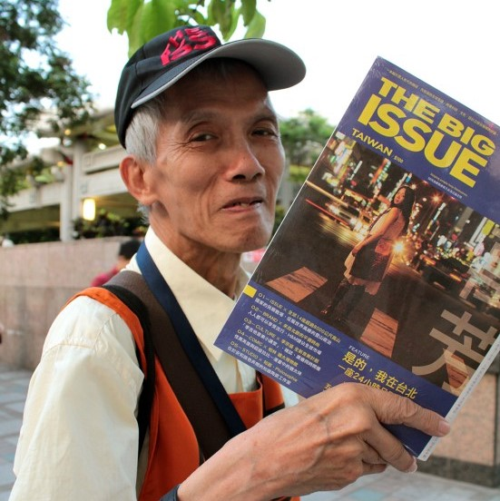
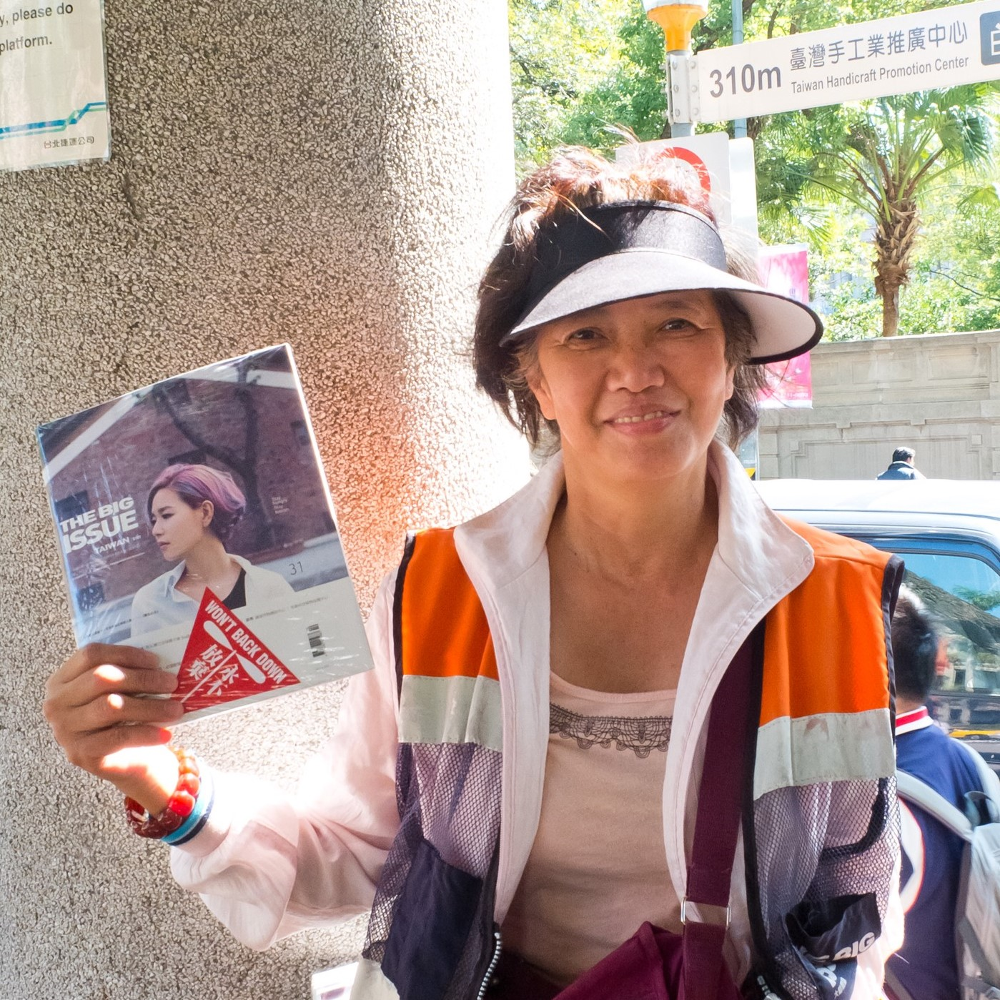
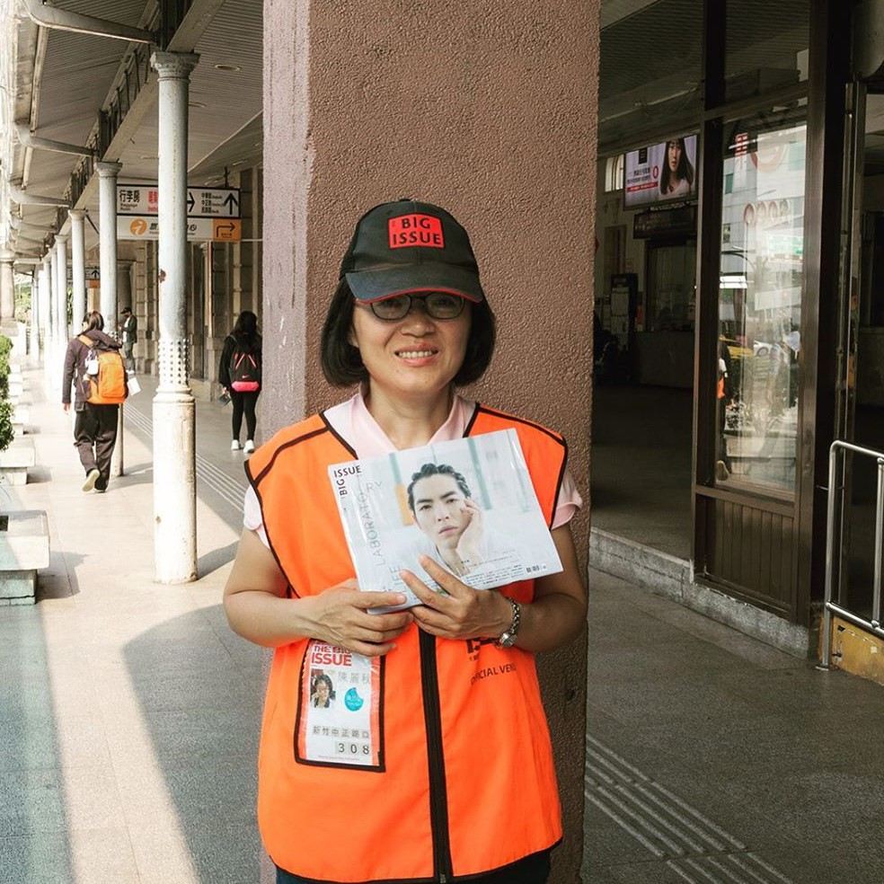
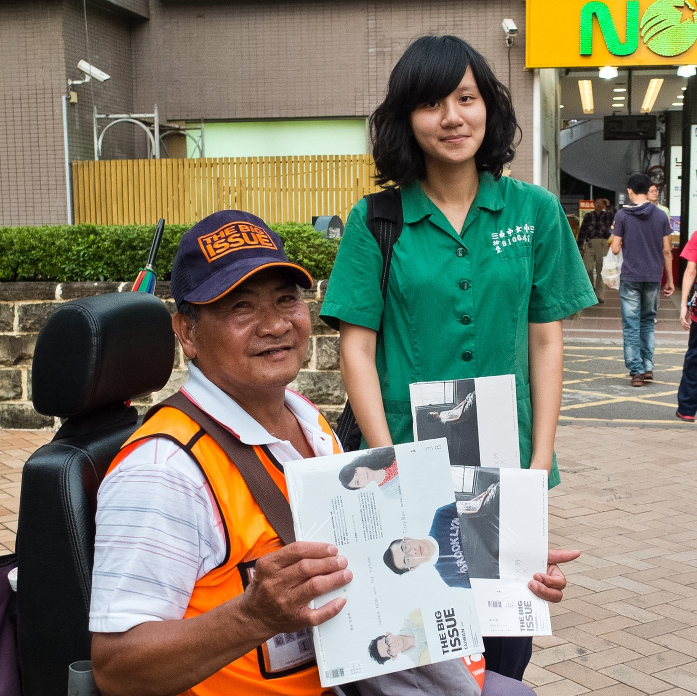
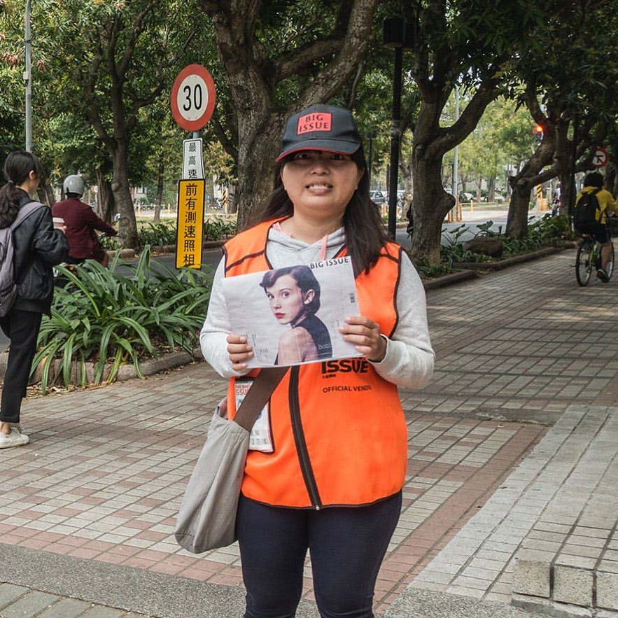

-

台北捷運圓山站
「這工作，讓我可以真正地走到外面來接近人群，讓我可以不用一輩子跟家人伸手要錢，也可以不用一直賴在家裡。」
秋燕因從小患有腦性麻痺，所以外出都需要靠電動輪椅代步。以前完全沒有做過任何工作，她說自己試圖找過許多工作，但都沒公司要聘雇她，因為都是要熟悉電腦文書作業或是四肢健全的清潔工作，這些對平常人看似最基本的能力要求，對秋燕來說卻難如登天……
-

台北捷運龍山寺站
「有一天去萬華社會局時，在電梯裡看到大誌雜誌的說明會傳單，就想說去試試看好了， 不然也一大把年紀了，根本不可能找到工作啊！」
最早以前，邱伯伯的第一份工作是在電器行，邊賣電器兼維修，後來就換到西藥原料工廠 當員工，工廠之後遷到桃園工作，藥廠的工作一待就十五年了。邱伯伯在六十歲以前辦理 提前退休，因為好像身體開始會對藥粉過敏，感覺那藥粉對身體很不好，所以才決定退休 ……
-

台北捷運臺大醫院站
「當初會來賣雜誌是因為在台大醫院這裡遇到一位販售員，我當時在附近賣玉蘭花，然後 看他賣得很不錯，就問他要怎麼做這份工作。」
在投入賣雜誌之前，高姐遇到販售員子承，子承就帶她到雜誌社初步瞭解工作內容，高姐 就這樣開始從賣玉蘭花變成賣雜誌。平常早上除了賣玉蘭花，下午又多了一份賣雜誌的工 作，這樣一來生活的收入開始有明顯的改善，之前僅靠賣玉蘭花，對高姐來說相當微薄 ……
-

新竹火車站
「目前我是住在康復之家，有護理師和社工師的輔導與協助，自己的狀態慢慢趨於穩定。 但我還是很希望能早日康復並回歸職場工作。」
麗秋在旅遊業工作了十年之後，帶團出國真的很辛苦，身體要能應付時差的疲倦感，又要 處理旅客的各種疑難雜症。後來，轉換跑道去美語補習班當美語老師，服務了一段時間， 同時也在這時間點上，麗秋開始有失眠症狀，這症狀也逐日影響到她的教學工作⋯⋯
-

台中勤美誠品
「當時手術完真的很痛苦。有一天，就請護士小姐推我到戶外，抽完第五根菸，我就又乖 乖回去做復健，日子總還是要過下去。」
因為一場從三樓墜落的工安意外導致陳大哥脊椎粉碎性骨折，目前仍在努力復健中，人生 雖遭逢如此劇變，但陳大哥還是很樂觀的面對一切。手術後每天坐也坐不好，躺也躺不好 。但是，脊椎損傷的關係，有很多工作都無法勝任……
-

雲林科技大學
「以前有做過會計助理，也待過會計事務所，但這些工作的壓力大到我無法負荷。後來精 神狀況不好後，就完全無法勝任工作了。」
2016年宛純搬來亞葵小鎮生活，亞葵小鎮是一個提供精神復健的場域，她試著重新調整自 己的心靈狀態。過去曾對人群恐慌，內心時時充滿負面情緒且感到焦慮，在康復中心老師 的細心陪伴與支持協助下，她重新尋回正向、積極的自我，並努力找回重返社會的動能 ……
-

雲林斗六火車站
「我有去參加職業訓練，受訓完雖然有去餐廳工作，但廚藝還無法勝任餐廳的要求，而且 工作壓力變大就很容易緊張焦慮⋯⋯」
從2015年10月入住亞葵小鎮後就有許多的輔導課程，讓文興慢慢調整改善焦慮的症狀。隨 著病情的逐日穩定，也開始嘗試著再回到職場上工作。文興說目前賣雜誌這工作可以訓練 恆心與耐心，壓力不會像職場競爭那麼大，也可以幫助他接觸外面的社會……
-

台南成大光復校區&台南應用科大
「我已經六十多歲了，真的很難找到合適的工作，我也試過當警衛保全，去實習到一半， 就被年輕人給取代了，被公司嫌太老。」
2012年年底前，朱大哥還在科技公司工作，職位與待遇都不錯，還有一個完整的家庭。但 某天因公司惡性倒閉，欠下巨額負債，當保證人的朱大哥，成了銀行唯一找得到的「負責 人」。原本完整的家庭，一夕崩壞，妻子帶著小孩離開他，走頭無路的朱大哥，最後流露 街頭……
-

高雄城市光廊
「我的腳踏車後面綁一個大籃子，就四處去搜、去撿，好一點一天賺個兩、三百塊，但現 在不能擺攤，警察會趕人，房子也拆光沒東西撿了。」
1989年左右，貴仔曾經在海上待過一段時間。回臺灣後，一直沒有找到穩定的工作，就在 公園一天度過一天。現在努力賣雜誌後生活有點改善，記得剛開始賣的前兩個月真的賣得 很不好，接著就越來越穩定了，最近終於租了一間月租兩千元的矮厝……
所有地區故事